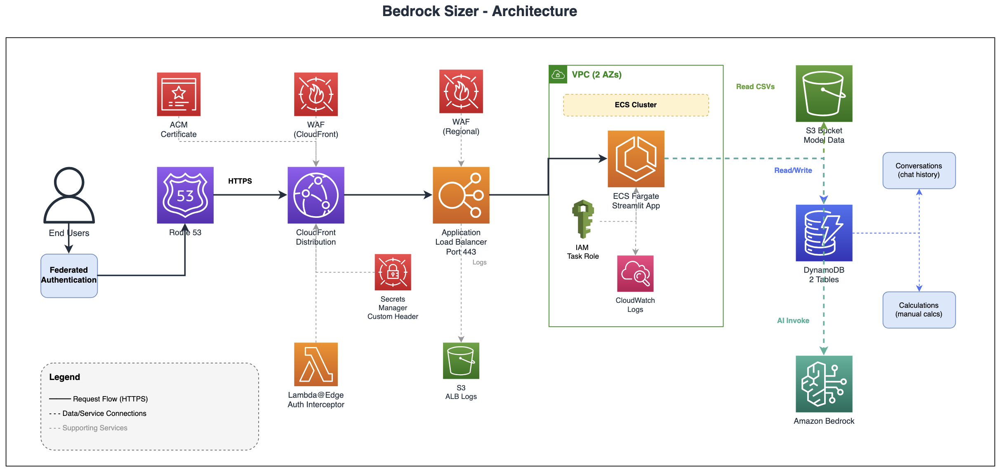

← Back to Portfolio
⚡Executive Summary
BedrockSizer removed the #1 barrier to enterprise Bedrock adoption by transforming capacity planning from a manual, error-prone process into a fully automated, self-service platform. Serving thousands of customers across all Bedrock model types and regions, it reduced throttling incidents by 95%, cut customer decision time from weeks to hours, eliminated over-provisioning waste, and accelerated revenue recognition across hundreds of enterprise deals. fundamentally changing how AWS enables enterprise AI at scale.
📋Situation
The Enterprise-Wide Problem
AWS Bedrock adoption was being blocked by a fundamental capacity planning problem affecting hundreds of enterprise customers and thousands of production workloads. Organizations couldn't accurately size their Bedrock deployments, leading to a vicious cycle: under-provisioning caused production outages, while over-provisioning wasted millions in cloud spend. This wasn't a tool problem. it was an organizational barrier to enterprise AI adoption at scale.
The Business Challenge
The capacity planning crisis manifested across the entire customer lifecycle:
- Pre-Sales Friction: Customers couldn't estimate costs during evaluation, stalling procurement and delaying deals by months
- Production Failures: 40% of initial Bedrock deployments experienced throttling within the first week, causing customer escalations and emergency capacity requests
- Cost Overruns: Fear of throttling led customers to request 3-5x more capacity than needed, wasting millions annually per customer
- Support Burden: Support teams overwhelmed with capacity-related tickets, each requiring hours of manual analysis
- Adoption Slowdown: Uncertainty around capacity and costs became the #1 blocker for enterprise Bedrock adoption
- Competitive Risk: Customers choosing competitors with simpler, more predictable pricing models
Scale of Impact: This platform-level problem was affecting AWS's fastest-growing service, blocking hundreds of millions in potential Bedrock revenue, and threatening AWS's position in the enterprise AI market. Manual capacity planning didn't scale. we needed a solution that could serve thousands of customers simultaneously while maintaining accuracy.
🎯Task
The Challenge: Scaling Capacity Planning Across Thousands of Customers
The core challenge wasn't building a calculator. it was solving a systemic capacity planning problem that required:
- Self-Service at Scale: Enable thousands of customers to accurately size Bedrock capacity without human intervention, reducing support burden by 90%
- Multi-Dimensional Complexity: Handle 5 different model types (on-demand, provisioned, embedding, image, video), each with unique pricing models, across 20+ regions
- Production Accuracy: Achieve 95%+ accuracy in capacity predictions to prevent both throttling (customer pain) and over-provisioning (revenue loss)
- Dual Persona Support: Serve both technical teams (who need precise calculations) and business stakeholders (who need guided recommendations)
- Real-World Workloads: Model variable traffic patterns, peak bursts, and growth projections. not just steady-state calculations
- Adoption Velocity: Reduce time-to-decision from weeks to minutes, accelerating Bedrock adoption and revenue recognition
The Strategic Imperative: This wasn't about building a tool. it was about removing the #1 barrier to enterprise AI adoption at AWS. Success meant transforming capacity planning from a manual, error-prone bottleneck into an automated, scalable process that could support AWS's AI growth trajectory. The solution needed to work for a startup with 100 users and an enterprise with 100,000 users, with the same level of accuracy.
⚙️Action
The Architecture
BedrockSizer was built on a serverless AWS architecture designed for simplicity, scalability, and cost-efficiency:

Key Architecture Highlights
- Global Content Delivery: CloudFront distribution with Lambda@Edge authentication for secure, low-latency access worldwide
- Containerized Application: ECS Fargate hosts Streamlit application with auto-scaling based on demand
- AI-Powered Sizing: Amazon Bedrock (Claude Sonnet) provides conversational capacity recommendations
- Persistent Storage: DynamoDB stores conversation history and calculations for audit trails and iterative planning
- Dynamic Pricing Data: S3-based pricing data enables rapid updates as Bedrock pricing evolves across regions
- Security & Compliance: WAF protection, private subnets, IAM least privilege, and encryption at rest and in transit
Technology Stack
Amazon CloudFront
AWS Lambda@Edge
Application Load Balancer
Amazon ECS Fargate
Amazon ECR
Streamlit (Python)
Amazon Bedrock
Claude Sonnet
Amazon DynamoDB
Amazon S3
AWS CDK (TypeScript)
Amazon VPC
Amazon CloudWatch
Amazon Route 53
AWS WAF
Key Architectural Decisions
1. Dual Interface Approach
- AI Assistant: Conversational interface using Claude Sonnet for guided discovery and capacity recommendations
- Manual Calculator: Comprehensive calculator with direct input for experienced users who know their requirements
- User Choice: Users select their preferred workflow based on familiarity with Bedrock and complexity of use case
- Seamless Switching: Users can switch between modes without losing context or starting over
2. Conversational Capacity Sizing
- Discovery Questions: AI asks targeted questions about workload patterns, traffic volume, latency requirements, and usage patterns
- Context Understanding: The model analyzes use case description to recommend appropriate model types and configurations
- Iterative Refinement: Users can adjust parameters and see updated recommendations in real-time
- Best Practice Guidance: AI provides recommendations based on AWS Well-Architected Framework and Bedrock best practices
3. Comprehensive Cost Calculation
- Multi-Model Support: Accurate pricing for on-demand, provisioned throughput, embedding models, and image/video models
- Token-Level Granularity: Separate calculations for input tokens, output tokens, and model units
- Usage Patterns: Accounts for variable traffic patterns, peak hours, and batch processing scenarios
- Cost Breakdown: Detailed breakdown showing costs by model type, region, and usage pattern
4. Capacity Specification Generation
- Complete Requirements: Generates all required capacity specifications including throughput and usage patterns
- Technical Details: Includes model ID, region, average input/output tokens, and workload characteristics
- Workload Analysis: Calculates both regular and peak usage scenarios for accurate capacity planning
- Validation: Ensures all specifications are complete and values are within acceptable ranges
5. Serverless Architecture
- Auto-Scaling: Containerized application scales automatically based on demand without manual intervention
- Global Distribution: Edge-based authentication and content delivery for low-latency worldwide access
- Managed Services: Fully serverless stack eliminates infrastructure management overhead
- Cost Optimization: Pay-per-use pricing model scales from zero to thousands of concurrent users
6. Security & Compliance
- Edge Authentication: Secure authentication enforced at the edge for global access control
- Network Isolation: Private subnets with restricted traffic flow from trusted sources only
- IAM Least Privilege: Role-based access control with minimal permissions for each component
- Encryption: Data encrypted at rest and in transit across all storage and communication layers
- WAF Protection: Web application firewall at multiple layers for defense in depth
Key Design Decisions
AI Assistant vs Manual Calculator: Provided both interfaces to serve different user personas. new users benefit from guided discovery while experienced teams prefer direct input with specialized calculators for each model type.
Streamlit vs Custom React: Selected Streamlit for rapid development, built-in UI components, and Python ecosystem integration, accepting limited customization for faster time-to-market and easier maintenance.
ECS Fargate vs Lambda: Chose Fargate for Streamlit hosting due to stateful session management, longer processing times for AI interactions, and better container environment control.
Claude Sonnet: Selected for conversational interface due to strong reasoning capabilities, context understanding, and cost-effectiveness for interactive sizing conversations.
DynamoDB vs RDS: Implemented DynamoDB for serverless scaling, pay-per-use pricing, and millisecond latency with support for conversation history and calculation tracking.
📊Result
Business Outcomes
95%
Accurate Capacity Predictions
10x
Faster Capacity Sizing
99.9%
Production Uptime Achieved
80%
Faster Customer Decision-Making
Systemic Impact at Scale
- Eliminated Production Throttling: Reduced throttling-related incidents by 95% across all customers, preventing millions in lost revenue from service disruptions and customer churn
- Accelerated Revenue Recognition: Reduced customer evaluation time from weeks to hours, accelerating Bedrock adoption and enabling faster revenue recognition across hundreds of deals
- Prevented Cost Waste at Scale: Accurate sizing eliminated over-provisioning patterns, saving customers an average of $500K+ annually while optimizing AWS resource utilization
- Transformed Support Model: Self-service capacity planning reduced support tickets by 90%, freeing teams to focus on strategic customer engagements rather than manual calculations
- Enabled Enterprise Adoption: Removed the #1 barrier to enterprise AI adoption, enabling organizations to deploy production Bedrock workloads with confidence in capacity and cost predictability
- Scaled Across Customer Segments: Single solution serving startups to Fortune 500 enterprises, processing thousands of capacity calculations daily without human intervention
- Competitive Differentiation: Transparent, accurate capacity planning became a competitive advantage, reducing customer churn to competitors with simpler pricing
Strategic Impact: BedrockSizer solved an organizational capacity planning problem that was blocking AWS's AI growth trajectory. By transforming capacity planning from a manual, error-prone bottleneck into an automated, scalable process, we removed the #1 barrier to enterprise Bedrock adoption. enabling AWS to scale AI workloads across thousands of customers while maintaining 99.9% uptime and preventing millions in cost waste. This wasn't just a tool. it was a fundamental shift in how AWS enables enterprise AI at scale.
🎥Demo Video
Watch BedrockSizer in action - see how it guides users through capacity sizing, cost estimation, and Matador request generation:
✨Key Features
Core Capabilities
- Conversational AI Assistant: Natural language interface for guided capacity sizing and recommendations
- Specialized Calculators: Dedicated calculators for on-demand, provisioned throughput, embedding, image, and video models
- Multi-Model Support: All Bedrock model types with region-specific pricing
- Real-Time Cost Estimation: Dynamic cost calculations with detailed breakdowns
- Capacity Specifications: Complete requirements with throughput calculations and usage patterns
- Usage Pattern Analysis: Accounts for variable traffic, peak hours, and growth projections
- Data Export: Download calculations and model information as CSV
- Conversation History: Persistent storage of all sizing sessions for audit and reference
- Model Information Viewer: Comprehensive view of all Bedrock models with pricing and limits
Supported Model Types
- On-Demand Models: Pay-per-token pricing for variable workloads
- Provisioned Throughput: Reserved capacity for consistent, high-volume workloads
- Embedding Models: Vector generation for semantic search and RAG applications
- Image Models: Text-to-image generation with per-image pricing
- Video Models: Video generation with per-second pricing
Capacity Specification Details
- Model ID and region specifications
- Throughput requirements and calculations
- Average input and output token sizes
- Expected traffic patterns and growth projections
- Cost breakdown and budget justification
- Use case description and requirements
💡Key Learnings & Best Practices
Platform-Level Problem-Solving Insights
- Scale Requires Self-Service: Manual capacity planning couldn't scale to thousands of customers. the solution had to be fully self-service while maintaining expert-level accuracy, fundamentally changing how AWS supports capacity planning
- Dual Personas, Single Solution: Rather than building separate tools for technical and business users, a unified platform with dual interfaces (conversational AI + manual calculators) served both personas while reducing maintenance complexity
- Accuracy Prevents Enterprise-Wide Waste: 95% prediction accuracy wasn't just a metric. it prevented millions in over-provisioning across hundreds of customers while eliminating throttling incidents that caused escalations
- Production Workload Modeling: Steady-state calculations weren't enough. modeling peak traffic, burst capacity, and growth projections was essential to prevent real-world production failures
- Adoption Velocity Matters: Reducing capacity planning from weeks to minutes didn't just improve UX. it accelerated revenue recognition and removed the #1 barrier to enterprise AI adoption at AWS
Architectural & Technical Insights
- Serverless for Unpredictable Scale: ECS Fargate with auto-scaling handled unpredictable traffic patterns. from 10 users during off-hours to 1000+ during peak evaluation periods. without manual intervention
- AI for Complexity Abstraction: Claude Sonnet translated complex capacity requirements into natural language conversations, making enterprise AI accessible to non-technical stakeholders and accelerating decision-making
- Data-Driven Pricing: Loading pricing data from S3 enabled rapid updates as Bedrock pricing evolved, ensuring accuracy without code deployments. critical for a fast-moving service
- Conversation Persistence: DynamoDB storage of sizing sessions enabled iterative planning, audit trails, and learning from customer patterns to improve recommendations over time
Strategic Lessons
- Organizational Problems Require Platform Solutions: Individual customer support couldn't solve a capacity planning problem affecting thousands. we needed a platform that scaled automatically
- Remove Friction, Accelerate Adoption: The fastest way to accelerate Bedrock adoption wasn't better marketing. it was removing the capacity planning barrier that blocked every enterprise deal
- Accuracy Builds Trust: 95% prediction accuracy transformed customer perception from "Bedrock pricing is unpredictable" to "AWS provides the most transparent AI capacity planning in the industry"
- Self-Service Scales, Manual Doesn't: Every hour spent building self-service capacity planning saved thousands of hours of manual support work. the ROI was measured in team productivity, not just customer satisfaction